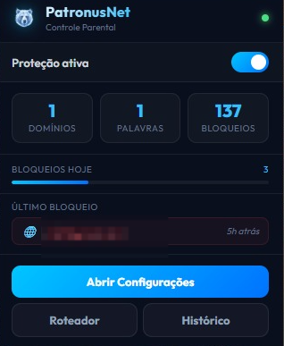

01
Bloqueio por domínio
Defina os domínios que devem ser bloqueados durante a navegação.
A extensão PatronusNet para navegadores Chromium adiciona controle parental por domínio, por palavras-chave e por conteúdo com IA local, tudo com processamento local e uma interface simples de configurar.

Recursos desenvolvidos para facilitar a configuração das políticas de proteção.
Defina os domínios que devem ser bloqueados durante a navegação.
Cadastre palavras (tags) e a extensão bloqueia páginas cujo texto ou endereço contenha esses termos.
Defina os dias da semana e o horário em que a proteção deve ser ativada automaticamente.
Proteja as configurações e o desbloqueio de páginas com uma senha, evitando alterações não autorizadas.
Acompanhe os bloqueios recentes e veja um panorama da proteção dos últimos dias, com exportação em CSV.
Um assistente visual ajuda a configurar o DNS de proteção direto no painel do seu roteador.
Classificação semântica de conteúdo rodando 100% no navegador (Transformers.js / ONNX): oculta trechos com possível discurso de ódio em fóruns e notícias sem enviar o texto das páginas para servidores externos.
Bloqueia sem exibir a tela do PatronusNet e mantém um registro local das páginas visitadas, para acompanhamento discreto.
A extensão foi projetada para navegadores baseados no projeto Chromium.
Navegador principal para utilização da extensão.
Compatível com o ecossistema de extensões Chromium.
A compatibilidade pode variar conforme o navegador.
O download é um arquivo .zip com os arquivos da extensão. Basta extrair e carregar em modo desenvolvedor, seguindo os passos abaixo.
Gratuito. Compatível com Google Chrome, Microsoft Edge e outros navegadores baseados em Chromium.Para instalar manualmente a partir do arquivo .zip em modo desenvolvedor:
Descompacte o arquivo da extensão em uma pasta do seu computador.
Acesse chrome://extensions (ou edge://extensions).
Use o botão no canto superior da página de extensões.
Clique em "Carregar sem compactação" e selecione a pasta extraída.
O PatronusNet prioriza o processamento local sempre que possível. A proposta é reduzir a necessidade de enviar informações de navegação para serviços externos e manter maior controle sobre os dados utilizados.